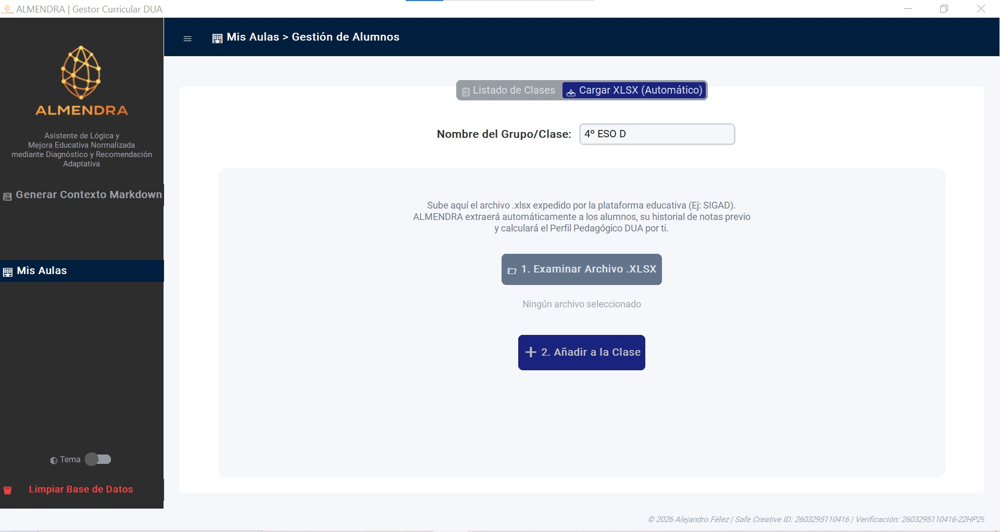
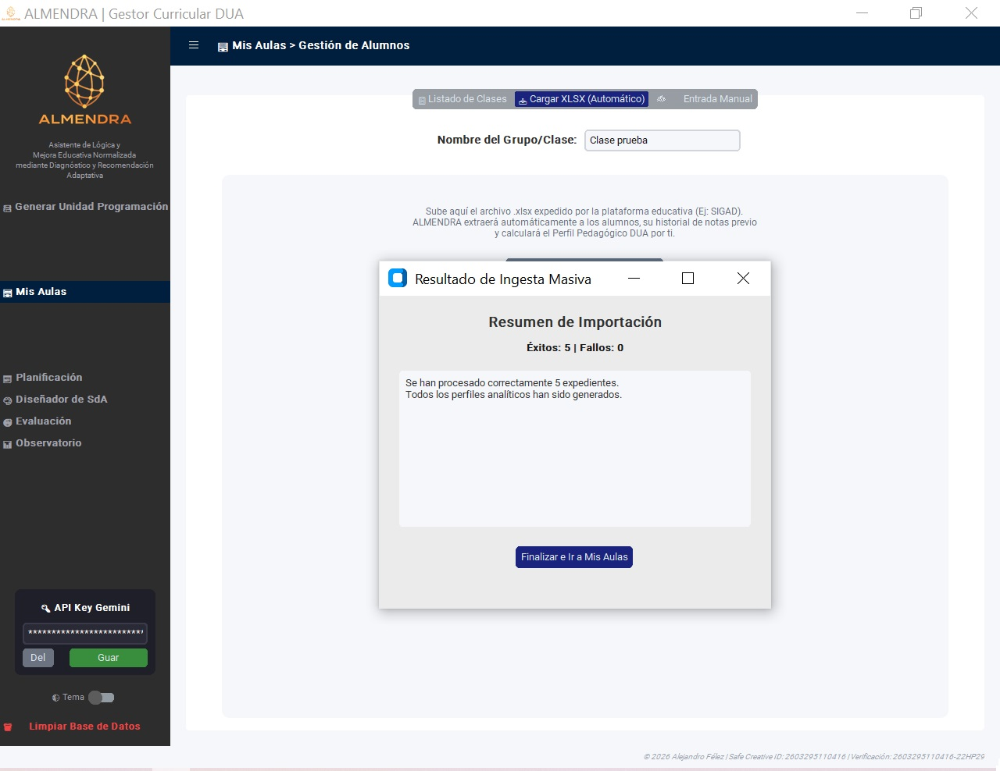

3
El módulo de MIS AULAS constituye el punto de entrada ALMENDRA, permitiendo articular el espacio de trabajo mediante la creación de aulas y la ingesta directa de los expedientes académicos previamente descargados. A través de este proceso de importación automatizada, el sistema parsea y mapea en local la matriz de calificaciones de los estudiantes, vinculando sus resultados con los descriptores operativos del Perfil de salida y permitiendo la catalogación individualizada del alumnado con necesidades de apoyo educativo. Esta fase inicial es fundamental, ya que construye la base de datos estructural sobre la que el sistema experto calculará posteriormente el diagnóstico preciso del grupo-clase y proyectará las estrategias de adaptación DUA.
{"typeGame":"Mapa","instructions":"","showMinimize":false,"showActiveAreas":false,"author":"","url":"../content/resources/imagen69.jpg","authorImage":"","altImage":"","itinerary":{"showClue":false,"clueGame":"","percentageClue":40,"showCodeAccess":false,"codeAccess":"","messageCodeAccess":""},"points":[{"id":"p1378978724479","title":"Cargar xls","type":2,"url":"","video":"","x":0.7215277481079102,"y":0.18731692175414183,"x1":0,"y1":0,"points":[],"pointsd":[],"footer":"","author":"","alt":"","iVideo":0,"fVideo":0,"eText":"","iconType":85,"question":"","question_audio":"","toolTip":"","link":"","color":"#000000","fontSize":"14","map":{"id":"a1378978724479","pts":[{"id":"p1253836800381","title":"","type":0,"url":"","video":"","x":0,"y":0,"x1":0,"y1":0,"points":[],"pointsd":[],"footer":"","author":"","alt":"","iVideo":0,"fVideo":0,"eText":"","iconType":0,"question":"","question_audio":"","toolTip":"","link":"","color":"#000000","fontSize":"14","map":{"id":"a1253836800381","url":"","alt":"","author":"","pts":[]},"slides":[{"id":"s1253836800381","title":"","url":"","author":"","alt":"","footer":""}],"tests":[],"activeSlide":0,"activeTest":0}],"url":"","alt":"","author":"","active":0},"slides":[{"id":"s1378978724479","title":"","url":"","author":"","alt":"","footer":""}],"tests":[],"activeSlide":0,"activeTest":0,"audio":""},{"id":"p401275055780","title":"Examinar archivos XLSX","type":2,"url":"","video":"","x":0.5977777481079102,"y":0.5561310124650813,"x1":0,"y1":0,"points":[],"pointsd":[],"footer":"","author":"","alt":"","iVideo":0,"fVideo":0,"eText":"","iconType":85,"question":"","question_audio":"","toolTip":"","link":"","color":"#000000","fontSize":"14","map":{"id":"a401275055780","pts":[{"id":"p1462952008104","title":"","type":0,"url":"","video":"","x":0,"y":0,"x1":0,"y1":0,"points":[],"pointsd":[],"footer":"","author":"","alt":"","iVideo":0,"fVideo":0,"eText":"","iconType":0,"question":"","question_audio":"","toolTip":"","link":"","color":"#000000","fontSize":"14","map":{"id":"a1462952008104","url":"","alt":"","author":"","pts":[]},"slides":[{"id":"s1462952008104","title":"","url":"","author":"","alt":"","footer":""}],"tests":[],"activeSlide":0,"activeTest":0}],"url":"","alt":"","author":"","active":0},"slides":[{"id":"s401275055780","title":"","url":"","author":"","alt":"","footer":""}],"tests":[],"activeSlide":0,"activeTest":0,"audio":""},{"id":"p306699701558","title":"Proceder a la ingesta","type":0,"url":"../content/resources/imagen43.jpg","video":"","x":0.5865277481079102,"y":0.7181066456959083,"x1":0,"y1":0,"points":[],"pointsd":[],"footer":"Una vez realizada la ingesta aparecerá una notificación de confirmación","author":"","alt":"","iVideo":0,"fVideo":0,"eText":"","iconType":85,"question":"","question_audio":"","toolTip":"","link":"","color":"#000000","fontSize":"14","map":{"id":"a306699701558","pts":[{"id":"p599376619133","title":"","type":0,"url":"","video":"","x":0,"y":0,"x1":0,"y1":0,"points":[],"pointsd":[],"footer":"","author":"","alt":"","iVideo":0,"fVideo":0,"eText":"","iconType":0,"question":"","question_audio":"","toolTip":"","link":"","color":"#000000","fontSize":"14","map":{"id":"a599376619133","url":"","alt":"","author":"","pts":[]},"slides":[{"id":"s599376619133","title":"","url":"","author":"","alt":"","footer":""}],"tests":[],"activeSlide":0,"activeTest":0}],"url":"","alt":"","author":"","active":0},"slides":[{"id":"s306699701558","title":"","url":"","author":"","alt":"","footer":""}],"tests":[],"activeSlide":0,"activeTest":0,"audio":""},{"id":"p1036855823175","title":"Nombre del grupo clase","type":2,"url":"","video":"","x":0.6777777481079101,"y":0.24391711073029884,"x1":0,"y1":0,"points":[],"pointsd":[],"footer":"","author":"","alt":"","iVideo":0,"fVideo":0,"eText":"","iconType":85,"question":"","question_audio":"","toolTip":"","link":"","color":"#000000","fontSize":"14","map":{"id":"a1036855823175","pts":[{"id":"p489686425148","title":"","type":0,"url":"","video":"","x":0,"y":0,"x1":0,"y1":0,"points":[],"pointsd":[],"footer":"","author":"","alt":"","iVideo":0,"fVideo":0,"eText":"","iconType":0,"question":"","question_audio":"","toolTip":"","link":"","color":"#000000","fontSize":"14","map":{"id":"a489686425148","url":"","alt":"","author":"","pts":[]},"slides":[{"id":"s489686425148","title":"","url":"","author":"","alt":"","footer":""}],"tests":[],"activeSlide":0,"activeTest":0}],"url":"","alt":"","author":"","active":0},"slides":[{"id":"s1036855823175","title":"","url":"","author":"","alt":"","footer":""}],"tests":[],"activeSlide":0,"activeTest":0,"audio":""},{"id":"p750437358403","title":"Listado de clases","type":2,"url":"","video":"","x":0.45597841650023496,"y":0.14306225822967233,"x1":0,"y1":0,"points":[],"pointsd":[],"footer":"","author":"","alt":"","iVideo":0,"fVideo":0,"eText":"","iconType":85,"question":"","question_audio":"","toolTip":"","link":"","color":"#000000","fontSize":"14","map":{"id":"a750437358403","pts":[{"id":"p22802501141","title":"","type":0,"url":"","video":"","x":0,"y":0,"x1":0,"y1":0,"points":[],"pointsd":[],"footer":"","author":"","alt":"","iVideo":0,"fVideo":0,"eText":"","iconType":0,"question":"","question_audio":"","toolTip":"","link":"","color":"#000000","fontSize":"14","map":{"id":"a22802501141","url":"","alt":"","author":"","pts":[]},"slides":[{"id":"s22802501141","title":"","url":"","author":"","alt":"","footer":""}],"tests":[],"activeSlide":0,"activeTest":0}],"url":"","alt":"","author":"","active":0},"slides":[{"id":"s750437358403","title":"","url":"","author":"","alt":"","footer":""}],"tests":[],"activeSlide":0,"activeTest":0,"audio":""}],"isScorm":0,"textButtonScorm":"Guardar la puntuación","repeatActivity":true,"weighted":100,"textAfter":"","evaluationG":0,"selectsGame":[{"typeSelect":0,"numberOptions":4,"quextion":"","options":["","","",""],"solution":"","solutionWord":"","percentageShow":35,"msgError":"","msgHit":"","tests":[],"respuesta":"","numbertests":0}],"isNavigable":true,"showSolution":true,"timeShowSolution":3,"version":3,"percentajeIdentify":100,"percentajeShowQ":100,"percentajeQuestions":100,"autoShow":false,"autoAudio":true,"optionsNumber":0,"evaluation":false,"evaluationID":"d35416bc-50c0-444e-a37c-18a3f3232477","id":"idevice-1784559895427-56207lo3z","order":"","hideScoreBar":false,"hideAreas":false,"msgs":{"msgSubmit":"Enviar","msgIndicateWord":"Proporciona una palabra o expresión","msgClue":"¡Genial! La pista es:","msgErrors":"Errores","msgHits":"Aciertos","msgScore":"Puntuación","msgWeight":"Peso","msgMinimize":"Minimizar","msgMaximize":"Maximizar","msgFullScreen":"Pantalla Completa","msgNoImage":"Pregunta sin imágenes","msgSuccesses":"¡Correcto! | ¡Excelente! | ¡Genial! | ¡Muy bien! | ¡Perfecto!","msgFailures":"¡No era eso! | ¡Incorrecto! | ¡No es correcto! | ¡Lo sentimos! | ¡Error!","msgTryAgain":"Necesitas al menos %s% de respuestas correctas para obtener la información. Inténtalo de nuevo.","msgEndGameScore":"Comience la partida antes de guardar la puntuación.","msgScoreScorm":"La puntuación no se puede guardar porque esta página no forma parte de un paquete SCORM.","msgPoint":"Punto","msgAnswer":"Responder","msgOnlySaveScore":"¡Solo puede guardar la puntuación una vez!","msgOnlySave":"Solo puede guardar una vez","msgInformation":"Información","msgYouScore":"Su puntuación","msgOnlySaveAuto":"Su puntuación se guardará después de cada pregunta. Solo puede jugar una vez.","msgSaveAuto":"Su puntuación se guardará automáticamente después de cada pregunta.","msgSeveralScore":"Puede guardar la puntuación tantas veces como quiera","msgYouLastScore":"La última puntuación guardada es","msgActityComply":"Ya ha realizado esta actividad.","msgPlaySeveralTimes":"Puede realizar esta actividad cuantas veces quiera","msgClose":"Cerrar","msgPoints":"puntos","msgPointsA":"Puntos","msgQuestions":"Preguntas","msgAudio":"Audio","msgAccept":"Aceptar","msgYes":"Sí","msgNo":"No","msgShowAreas":"Mostrar áreas activas","msgShowTest":"Mostrar cuestionario","msgGoActivity":"Haz clic aquí para hacer esta actividad","msgSelectAnswers":"Selecciona las opciones correctas y haz clic en el botón ","msgCheksOptions":"Marca todas las opciones en el orden correcto y haz clic en ","msgWriteAnswer":"Escribe la palabra o frase correcta y haz clic en ","msgIdentify":"Identifica","msgSearch":"Buscar","msgClickOn":"Haz clic en","msgReviewContents":"Debes revisar el %s% de los contenidos de la actividad antes de completar el cuestionario.","msgScore10":"¡Todo está perfecto! ¿Quieres repetir esta actividad?","msgScore4":"No has superado la prueba. Revisa sus contenidos e intentarlo de nuevo. ¿Quieres repetir la actividad?","msgScore6":"¡Genial! Has superado la prueba, pero seguro que puedes mejorar. ¿Quieres repetir la actividad?","msgScore8":"¡Casi perfecto! Aún puedes hacerlo mejor. ¿Quieres repetir la actividad?","msgNotCorrect":"¡No es correcto! Has hecho clic en","msgNotCorrect1":"¡No es correcto! Has hecho clic en","msgNotCorrect2":"y la respuesta correcta es","msgNotCorrect3":"¡Prueba otra vez!","msgAllVisited":"¡Genial! Has visitado los puntos requeridos.","msgCompleteTest":"Puedes hacer la prueba.","msgPlayStart":"Pulsa aquí para empezar","msgSubtitles":"Subtítulos","msgSelectSubtitles":"Selecciona un archivo de subtítulos. Formatos admitidos:","msgNumQuestions":"Número de preguntas","msgHome":"Inicio","msgReturn":"Volver","msgCheck":"Comprobar","msgUncompletedActivity":"Actividad no completada","msgSuccessfulActivity":"Actividad superada. Puntuación: %s","msgUnsuccessfulActivity":"Actividad no superada. Puntuación: %s","msgTypeGame":"Mapa"}}


Seleccionar para realizar ingesta masiva y automática de los expedientes
Abre ventana para añadir de manera masiva y conjunta todos los expedientes en formato .xls previamente descargados de SIGAD ACADÉMICA.
Introducir manualmente el nombre del grupo clase para su identificación (ej. 2º ESO B)
Interfaz desde la que se pueden comprobar la información y diagnósticos de cada clase
Su navegador no es compatible con esta herramienta.